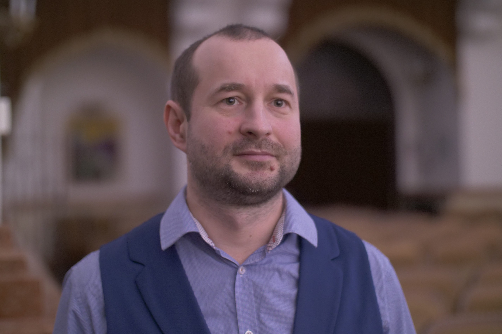

.png)

Лесневский Сергей Викторович
- Phone: +375292505053
- Email: lesnevsky.sergey@gmail.com
- Skype: Serge Lesnevsky
- Telegram: SergeyLesnevsky
- Discord profile: Lesnevsky-Sergey#9525
Цель
Начать карьеру разработчика ПО в Вашей компании, стать частью команды разработки, приносить как можно больше пользы в компании, расширить персональный опыт и улучшить профессиональные навыки.
Инструменты и технологии
- - HTML (9-10)
- - CSS (8-10) (знаю flex/grid(предпочитаю flex))
- - JS (9-10) (работа с запросами, промисами, событиями, spead и т.д.)
- - TS (7-10) (создание интерфейсов, работа с enum и т.д.)
- - React (7 -10) (Разработка на классах/функциях)
- - GIT (7-10) (создаю и перемещаюсь по веткам, работа с github)
О себе
Большой опыт работы, в том числе и на руководящей позиции (заведующий отделением), сформировали такие навыки, как работа в команде, работа в режиме повышенной нагрузки и в условиях сжатых сроков.
Образование
- THE ROLLING SCOPES NODEJS 2024 Q1 (NODEJS)
- THE ROLLING SCOPES SCHOOL REACT 2023 Q1 (REACT)
- THE ROLLING SCOPES SCHOOL JAVASCRIPT/FRONT-END 2022Q3 (JAVASCRIPT)
- THE ROLLING SCOPES SCHOOL JS/FE PRE-SCHOOL 2022Q2 (JAVASCRIPT)
- Курсы QAQ в компании Senla(Java)
- Высшее образование БГАМ
Опыт работы
- 2024 - настоящее время веду уроки frontend в онлайн школе redRover
- 2022 freelance разработал сайт для музыкальной школы на (wordpress)
- поддерживаю, вношу корректировки, добавляю новый функционала в проект по созданию турниров FIFA (React TS)(freelance)
- 2008 - настоящее время ДМШИ№6 г. Минск (преподаватель)
- 2005 - 2009 МГДДиМ г. Минск (аккомпаниатор)
My projects:
-
DMSHI6
Сайт для музыкальной школы. 1) Я познакомился с виртуальным защищенным хостингом BeCloud и перенес сайт на сервер. 2) Получил понимание работы wordpress. -
Momentum (Desktop)
Работа с запросами к серверу и вывод данных на экран, минимальный интерактив с пользователем, создание кастомного аудиоплеерa -
Virtual_keyboard (Desktop)
Работа с событиями клавиатуры (JS) -
Online-zoo
Двухстраничный адаптивный сайт по макету из Figma (pixel perfect) реализация каруселей, бургер-меню, поп-ап и т.д.(JS) -
Portfolio
Одностраничный адаптивный сайт по макету из Figma (pixel perfect) бургер-меню, валидацию формы, 'fake' запрос на сервер (JS) -
Fifteenth
Копия игры в пятнашки, реализация на Canvas(JS) -
Online store (Desktop)
Работа представляет собой онлайн магазин(SPA), мной былa выполнена вся логика по работе с товаром (поиск, сортировка, добавление/удаление в корзину...), роутинг(TS) -
Habit Tracker
Финальный проект курсов JS, в нем я отвечал за работу с базой данных и backend, также рендеринг habit и добавления для каждого, уникального цвета.(TS) -
GraphQL
Финальный проект курса по React. GraphiQL — это инструмент с открытым исходным кодом Однако наше приложение также будет включать возможности авторизации/аутентификации, чтобы предоставить доступ к инструменту только авторизованным пользователям. (React) -
Form
Учебный проект на React. В нём реализована работа с API, с формой через RefObject и useForm, ssr